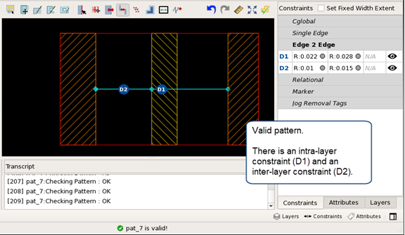
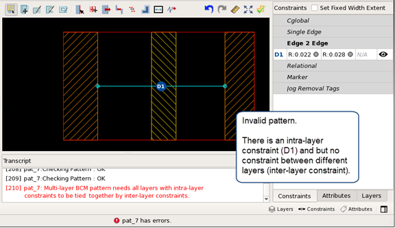

Adding Constraints to a Multilayer BCM1 (Accordion Extent) Pattern
Edge to edge constraints are supported
in multilayer BCM1 patterns, with some special requirements. In
order to provide unambiguous matching, if constraints are applied
between edges on the same layer (intra-layer constraints), that
layer also needs to have at least one constraint applied to another
layer (an inter-layer constraint).
Prerequisites
A multilayer BCM1 pattern is selected in the pattern list.
Procedure
- Use the Add
Edge to Edge Constraint (
 ) button
to add constraints as needed. See “Adding a BCM1 (Accordion Extent) Edge to Edge Constraint”.
) button
to add constraints as needed. See “Adding a BCM1 (Accordion Extent) Edge to Edge Constraint”.
Examples
This is an example of a valid multilayer BCM1 pattern with constraints. The D1 constraint is between two edges on the layer_1, and the D2 constraint is between an edge on layer_1 and an edge on layer_2.

This is an example of an invalid pattern. There is a constraint between layer_1 edges, but no constraint from a layer_1 edge to a layer_2 edge.
